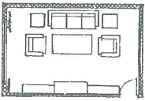
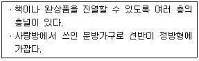
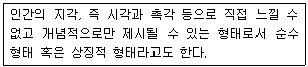
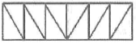

실내건축산업기사 (2017-03-05 기출문제)
1과목: 실내디자인론
1. 침대 옆에 위치하는 소형 테이블로 베드 사이드 테이블이라고도 하는 것은?
- 티 테이블
- 엔드 테이블
- 나이트 테이블
- 다이닝 테이블
(정답률: 82%)

2. 사무소 건축의 실단위 계획 중 개방식 배치에 관한 설명으로 옳지 않은 것은?
- 독립성 확보가 용이하다.
- 방의 길이나 깊이에 변화를 줄 수 있다.
- 오피스 랜드스케이핑은 일종의 개방식 배치이다.
- 전면적을 유효하게 이용할 수 있어 공간절약상 유리하다.
(정답률: 85%)
3. 호텔의 중심 기능으로 모든 동선체계의 시작이 되는 공간은?
- 객실
- 로비
- 클로크
- 린넨실
(정답률: 93%)
4. 다음과 같은 거실의 가구배치의 유형은?

- ㄱ자형
- ㄷ자형
- 대면형
- 직선형
(정답률: 82%)
5. 다음 중 다의도형 착시와 가장 관계가 깊은 것은?
- 루빈의 항아리
- 포겐도르프 도형
- 쾨니히의 목걸이
- 펜로즈의 삼각형
(정답률: 69%)
6. 치수계획에 있어 적정치수를 설정하는 방법으로 최소치 +α, 최대치 -α, 목표치 ±α가 있는데, 이 때 α는 적정치수를 끌어내기 위한 어떤 치수인가?
- 조정치수
- 기본치수
- 유동치수
- 가능치수
(정답률: 62%)
7. 균형(balance)에 관한 설명으로 옳지 않은 것은?
- 대칭적 균형은 가장 완전한 균형의 상태이다.
- 대칭적 균형은 공간에 질서를 주기가 용이하다.
- 비대칭적 균형은 시각적 안정성을 가져올 수 없다.
- 비대칭적 균형은 대칭적 균형보다 자연스러우며 풍부한 개성을 표현할 수 있다.
(정답률: 75%)
8. 백화점의 에스컬레이터에 관한 설명으로 옳지 않은 것은?
- 수송능력이 엘리베이터에 비해 크다.
- 대기시간이 없고 연속적인 수송설비이다.
- 승강 중 주위가 오픈되므로 주변 광고효과가 크다.
- 서비스 대상 인원의 10~20% 정도를 에스컬레이터가 부담하도록 한다.
(정답률: 79%)
9. 다음 중 마르셀 브로이어(Marcel Breuer)가 디자인한 의자는?
- 바실리 의자
- 파이미오 의자
- 레드블루 의자
- 바르셀로나 의자
(정답률: 58%)
10. 전통 한옥의 구조에서 중채 또는 바깥채에 있어 주로 남자가 기거하고 손님을 맞이하는 데 쓰이던 곳은?
- 안방
- 대청
- 사랑방
- 건넌방
(정답률: 85%)
11. 상점의 판매형식 중 측면판매에 관한 설명으로 옳지 않은 것은?
- 직원 동선의 이동성이 많다.
- 고객이 직접 진열된 상품을 접촉할 수 있다.
- 대면판매에 비해 넓은 진열면적의 확보가 가능하다.
- 시계, 귀금속점, 카메라점 등 전문성이 있는 판매에 주로 사용된다.
(정답률: 79%)
12. 실내공간을 형성하는 주요 기본요소로서, 다른 요소들이 시대와 양식에 의한 변화가 현저한 데 비해 매우 고정적인 것은?
- 벽
- 천장
- 바닥
- 기둥
(정답률: 80%)
13. 다음 설명에 알맞은 전통가구는?

- 서안
- 경축장
- 반닫이
- 사방탁자
(정답률: 65%)
14. 실내디자이너의 역할에 관한 설명으로 가장 알맞은 것은?
- 내부공간의 설계만을 담당한다.
- 건축공정을 제외한 실내구조에 대한 이해가 있어야 한다.
- 모든 실내디자인은 디자이너의 입장에서 고려되고 계획되어져야 한다.
- 기초원리와 재료들에 대한 지식과 함께 대인관계의 기술도 알아야 한다.
(정답률: 71%)
15. 작업대의 길이가 2m 정도인 간이부엌으로 사무실이나 독신자 아파트에 주로 설치되는 부엌의 유형은?
- 키친네트(kitchenett)
- 오픈 키친(open kitchen)
- 다용도 부엌(utility kitchen)
- 아일랜드 키친(island kitchen)
(정답률: 66%)
16. 형태를 의미구조에 의해 분류하였을 때, 다음 설명에 해당하는 것은?

- 현실적 형태
- 인위적 형태
- 이념적 형태
- 추상적 형태
(정답률: 74%)
17. 사무소 건축의 코어 유형 중 코어 프레임(core frame)이 내력벽 및 내진구조의 역할을 하므로 구조적으로 가장 바람직한 것은?
- 독립형
- 중심형
- 편심형
- 분리형
(정답률: 80%)
18. 천장에 관한 설명으로 옳지 않은 것은?
- 바닥면과 함께 공간을 형성하는 수평적 요소이다.
- 천장은 마감방식에 따라 마감천장과 노출천장으로 구분할 수 있다.
- 시각적 흐름이 최종적으로 멈추는 곳이기에 지각의 느낌에 영향을 미친다.
- 공간의 개방감과 확장성을 도모하기 위하여 입구는 높게 하고 내부공간은 낮게 처리한다.
(정답률: 82%)
19. 할로겐 전구에 관한 설명으로 옳지 않은 것은?
- 소형화가 가능하다.
- 안정기와 같은 점등장치를 필요로 한다.
- 효율, 수명 모두 백열전구보다 약간 우수하다.
- 일반적으로 점포용, 투광용, 스튜디오용 등에 사용된다.
(정답률: 56%)
20. 그리스의 파르테논 신전에서 사용된 착시교정 수법에 관한 설명으로 옳지 않은 것은?
- 기둥의 중앙부를 약간 부풀어 오르게 만들었다.
- 모서리 쪽의 기둥 간격을 보다 좁혀지게 만들었다.
- 기둥과 같은 수직 부재를 위쪽으로 갈수록 바깥쪽으로 약간 기울어지게 만들었다.
- 아키트레이브, 코니스 등에 의해 형성되는 긴 수평선을 위쪽으로 약간 볼록하게 만들었다.
(정답률: 69%)
2과목: 색채 및 인간공학
21. 인간이 기계보다 우수한 기능에 해당하는 것은?
- 예기치 못한 사건의 감지
- 반복적인 작업의 신뢰성 있는 수행
- 입력 신호에 대한 일관성 있는 반응
- 암호화된 정보의 신속하고 대량 보관
(정답률: 84%)
22. 인간공학적 사고방식과 관련이 가장 먼 것은?
- 인간과 기계와의 합리성 유지
- 작업설계 시 인간 중심의 수작업화 설계
- 인간의 특성에 알맞은 기계나 도구의 설계
- 인간의 건강상 문제 예방과 효율성 증대
(정답률: 60%)
23. 인체측정 자료의 응용원칙으로 볼 수 없는 것은?
- 조절식 설계원칙
- 맞춤식 설계원칙
- 최대치를 이용한 설계원칙
- 평균치를 이용한 설계원칙
(정답률: 51%)
24. 산업안전보건법상 근로자가 상시 작업하는 작업면의 조도기준으로 맞는 것은? (단, 갱내 작업장과 감광재료를 취급하는 작업장은 제외한다.)
- 기타 작업 : 100lux 이상
- 보통 작업 : 200lux 이상
- 정밀 작업 : 300lux 이상
- 초정밀 작업 : 800lux 이상
(정답률: 60%)
25. 어떤 물체나 표면에 도달하는 광(光)의 밀도(密度)를 무엇이라 하는가?
- 휘도(brightness)
- 조도(illuminance)
- 촉광(candle-power)
- 광도(luminous intensity)
(정답률: 59%)
26. 작업공간의 디스플레이 설계에 대한 설명으로 맞는 것은?
- 조절장치는 키가 큰 사람의 도달영역 안에 있어야 한다.
- 디스플레이와 눈과의 거리는 연령이 증가할수록 가까워진다.
- 작업자의 시선은 수평선상으로부터 아래로 30도 이하로 하는 것이 좋다.
- 디스플레이 화면과 근로자의 눈과의 거리는 40cm 이상으로 확보하는 것이 좋다.
(정답률: 63%)
27. 인간의 운동기능에서 진전(振顚:떨림)이 증가되는 경우는?
- 힘을 주고 있을 때
- 작업 대상물에 기계적인 마찰이 있을 때
- 손 떨림의 경우 손이 심장 높이에 있을 때
- 몸과 작업에 관계되는 부위가 잘 지지되어 있을 때
(정답률: 75%)
28. 눈의 구조에 있어 광선의 초점이 망막 위에 상이 맺히도록 조절하는 부위는?
- 황반
- 각막
- 홍채
- 수정체
(정답률: 68%)
29. 착시에 관한 설명으로 틀린 것은?
- 눈이 받는 자극에 대한 지각의 착각 현상을 말한다.
- “루빈의 항아리”의 예에서 보듯이 보는 관점에 따라 형태가 다르게 지각된다.
- 동일한 길이의 선이라도 조건을 어떻게 부여하는가에 따라 길이가 다르게 지각된다.
- “랜돌트(Landholt)의 C형 고리”는 착시현상을 설명하는 데 가장 널리 사용되고 있다.
(정답률: 77%)
30. 인간공학적 의자설계를 위한 일반적인 고려사항과 가장 거리가 먼 것은?
- 좌면의 무게 부하 분포
- 좌면의 높이와 폭 및 깊이
- 앉은키의 크기 및 의자의 강도
- 동체(胴體)의 안정성과 위치 변동의 편리성
(정답률: 61%)
31. 먼셀의 색입체 수직 단면도에서 중심축 양쪽에 있는 두 색상의 관계는?
- 인접색
- 보색
- 유사색
- 약보색
(정답률: 78%)
32. 시내버스, 지하철, 기차 등의 색채계획 시 고려할 사항으로 거리가 먼 것은?
- 도장 공정이 간단해야 한다.
- 조색이 용이해야 한다.
- 쉽게 변색, 퇴색되지 않아야 한다.
- 프로세스 잉크를 사용한다.
(정답률: 75%)
33. 우리나라의 한국산업표준(KS)으로 채택된 표색계는?
- 오스트발트
- 먼셀
- 헬름홀츠
- 헤링
(정답률: 75%)
34. 감법혼색에서 모든 파장이 제거될 경우 나타날 수 있는 색은?
- 흰색
- 검정
- 마젠타
- 노랑
(정답률: 61%)
35. 색의 동화작용에 관한 설명 중 옳은 것은?
- 잔상 효과로서 나중에 본 색이 먼저 본 색과 섞여 보이는 현상
- 난색 계열의 색이 더 커 보이는 현상
- 색들끼리 영향을 주어서 옆의 색과 닮은 색으로 보이는 현상
- 색점을 섬세하게 나열 배치해 두고 어느 정도 떨어진 거리에서 보면 쉽게 혼색되어 보이는 현상
(정답률: 64%)
36. 먼셀의 색채조화이론 핵심인 균형원리에서 각 색들이 가장 조화로운 배색을 이루는 평균 명도는?
- N4
- N3
- N5
- N2
(정답률: 75%)
37. 컴퓨터 화면상의 이미지와 출력된 인쇄물의 색채가 다르게 나타나는 원인으로 거리가 먼 것은?
- 컴퓨터상에서 RGB로 작업했을 경우 CMYK방식의 잉크로는 표현될 수 없는 색채범위가 발생한다.
- RGB의 색역이 CMYK의 색역 보다 좁기 때문이다.
- 모니터의 캘리브레이션 상태와 인쇄기, 출력용지에 따라서도 변수가 발생한다.
- RGB 데이터를 CMYK 데이터로 변환하면 색상 손상현상이 나타난다.
(정답률: 66%)
38. 유채색의 경우 보색잔상의 영향으로 먼저 본 색의 보색이 나중에 보는 색에 혼합되어 보이는 현상은?
- 계시대비
- 명도대비
- 색상대비
- 면적대비
(정답률: 68%)
39. 색을 지각적으로 고른 감도의 오메가 공간을 만들어 조화시킨 색채 학자는?
- 오스트발트
- 먼셀
- 문ㆍ스펜서
- 비렌
(정답률: 65%)
40. 빛이 프리즘을 통과할 때 나타는 분광현상 중 굴절현상이 제일 큰 색은?
- 보라
- 초록
- 빨강
- 노랑
(정답률: 61%)
3과목: 건축재료
41. 다음 건축재료 중 열전도율이 가장 작은 것은?
- 시멘트 모르타르
- 알루미늄
- ALC
- 유리섬유
(정답률: 68%)
42. 수경성 미장재료에 해당되는 것은?
- 희반죽
- 돌로마이트 플라스터
- 석고 플라스터
- 희사벽
(정답률: 58%)
43. 복층유리의 사용효과로서 옳지 않은 것은?
- 전기전도성 향상
- 결로의 방지
- 방음성능 향상
- 단열효과에 따른 냉ㆍ난방부하 경감
(정답률: 72%)
44. 벽돌벽 두께 1.5B, 벽면적 40m2 쌓기에 소요되는 점토벽돌(190×90×57mm)의 소요량은? (단, 할증률은 3%로 계산)
- 8850장
- 8960장
- 9229장
- 9408장
(정답률: 56%)
45. 목재 건조방법 중 자연건조법에 해당되는 것은?
- 훈연건조
- 수침법
- 진공건조
- 증기건조
(정답률: 69%)
46. 콘크리트의 재료적 특성에 관한 설명으로 옳지 않은 것은?
- 압축 및 인장강도가 높다.
- 내화, 내구적이다.
- 철근 및 철골 등의 철재에 대한 방청력이 뛰어나다.
- 수축 및 균열 발생의 우려가 크다.
(정답률: 47%)
47. 각종 금속의 성질에 관한 설명으로 옳지 않은 것은?
- 알루미늄은 콘크리트와 접촉하면 침식된다.
- 동은 대기 중에서는 내구성이 있으나 암모니아에는 침식되기 쉽다.
- 동은 주물로 하기 어려우나 청동이나 황동은 쉽다.
- 납은 산이나 알칼리에 강하므로 콘크리트에 매설해도 침식되지 않는다.
(정답률: 66%)
48. 리녹신에 수지, 고무물질, 코르크 분말, 안료 등을 섞어 마포(hemp cloth) 등에 발라 두꺼운 종이 모양으로 압연ㆍ성형한 제품은?
- 염화비닐판
- 비닐타일
- 리놀륨
- 무석면타일
(정답률: 53%)
49. 건물의 바닥 충격음을 저감시키는 방법에 관한 설명으로 옳지 않은 것은?
- 완충재를 바닥공간 사이에 넣는다.
- 부드러운 표면마감재를 사용하여 충격력을 작게 한다.
- 바닥을 띄우는 이중바닥으로 한다.
- 바닥슬래브의 중량을 작게 한다.
(정답률: 74%)
50. 석고나 탄산칼슘을 주원료로 하고 도배지를 붙이는 바탕의 요철이나 줄눈, 균열이나 구멍보수에 사용하는 것은?
- 수용성 실러(sealer)
- 용제형 실러(sealer)
- 퍼티(putty)
- 코킹(cocking)
(정답률: 67%)
51. 유리의 표면을 초고성능 조각기로 특수가공 처리하여 만든 유리로서 5mm 이상의 후판유리에 그림이나 글 등을 새겨 넣은 유리는?
- 에칭유리
- 강화유리
- 망입유리
- 로이유리
(정답률: 69%)
52. 아스팔트를 천연아스팔트와 석유아스팔트로 구분할 때 천연아스팔트에 해당되지 않는 것은?
- 레이크아스팔트
- 로크아스팔트
- 블로운아스팔트
- 아스팔타이트
(정답률: 62%)
53. 점토에 톱밥, 겨, 탄가루 등을 30~50% 정도 혼합, 소성한 것으로 비중은 1.2~1.5정도이며 절단, 못치기 등의 가공성이 우수한 벽돌은?
- 포도벽돌
- 과소벽돌
- 내화벽돌
- 다공벽돌
(정답률: 55%)
54. 합성수지별 주용도를 표기한 것으로 옳지 않은 것은?
- 실리콘수지 - 방수피막
- 에폭시수지 - 접착제
- 멜라민수지 - 가구판재
- 알키드수지 - 바닥판재
(정답률: 56%)
55. 굳지 않은 콘크리트의 성질로서 주로 물의 양이 많고 적음에 따른 반죽의 되고 진 정도를 나타내는 용어는?
- 컨시스턴시
- 플라스티시티
- 피니셔빌리티
- 펌퍼빌리티
(정답률: 69%)
56. 목재 및 기타 식물의 섬유질 소편에 합성수지 접착제를 도포하여 가열압착 성형한 판상제품은?
- 합판
- 파티클보드
- 집성목재
- 파키트리보드
(정답률: 79%)
57. 다음 암석 중 화성암에 속하지 않는 것은?
- 화강암
- 안산암
- 섬록암
- 석회암
(정답률: 46%)
58. 강의 기계적 성질 중 항복비를 옳게 나타낸 것은?
- 인장강도/항복강도
- 항복강도/인장강도
- 변형률/인장강도
- 인장강도/변형률
(정답률: 54%)
59. 용제 또는 유제상태의 방수제를 바탕면에 여러번 칠하여 방수막을 형성하는 방수법은?
- 아스팔트 루핑 방수
- 도막 방수
- 시멘트 방수
- 시트 방수
(정답률: 67%)
60. 중용열 포틀랜드시멘트의 특징이나 용도에 해당되지않는 것은?
- 수화속도가 비교적 빠르다.
- 수화열이 적다.
- 건조수축이 적다.
- 댐공사 등에 사용된다.
(정답률: 43%)
4과목: 건축일반
61. 25층 업무시설로서 6층 이상의 거실면적 합계가 36000m2인 경우 승강기 최소 설치대수는? (단, 16인승 이상의 승강기로 설치한다.)
- 7대
- 8대
- 9대
- 10대
(정답률: 56%)
62. 방화에 장애가 되어 같은 건축물 안에 함께 설치할수 없는 용도로 묶인 것은?
- 아동관련시설 - 의료시설
- 아동관련시설 - 노인복지시설
- 기숙사 - 공장
- 노인복지시설 - 소매시장
(정답률: 59%)
63. 조적식구조 벽체의 길이가 12m일 때 이 벽체에 설치할 수 있는 최대 개구부 폭의 합계는? (단, 각층의 대린벽으로 구획된 벽체의 경우)
- 2m
- 3m
- 4m
- 6m
(정답률: 45%)
64. 스프링클러설비를 설치하여야 하는 특정소방대상물 중 문화 및 집회시설(동ㆍ식물원 제외)에서 모든 층에 스프링클러설비를 설치하여야 하는 경우에 해당하는 수용인원의 최소 기준으로 옳은 것은?
- 50명 이상
- 100명 이상
- 200명 이상
- 300명 이상
(정답률: 56%)
65. 건축화 조명방식과 거리가 먼 것은?
- 정측광채광
- 다운라이트
- 광천장조명
- 코브라이트
(정답률: 67%)
66. 조적식구조에서 철근콘크리트구조로 된 윗인방을 설치하여야 하는 개구부 상부의 최소폭 기준은?
- 0.5m
- 1.0m
- 1.8m
- 2.5m
(정답률: 52%)
67. 예술 수공예(Art and Crafts)운동에 관한 설명으로 옳은 것은?
- 새로운 산업사회의 도래로 한정된 과거양식의 재현에서 벗어나 과거양식 전체를 취사 선택하여 새로운 형태를 창출하였다.
- 산업화가 초래한 도덕적, 예술적 타락상에서 수공예술의 중요성을 강조하여 생활의 미를 향상시키고자 하였다.
- 수직 수평의 엄격한 기하학적 질서와 색채를 조형의 기본으로 삼았다.
- 리듬있는 조형적 구성과, 부분과 전체의 원활한 융합에 의한 동적 표현을 목표로 하였다.
(정답률: 58%)
68. 소방특별조사를 실시하는 경우에 해당되지 않는 것은?
- 관계인이 소방시설법 또는 다른 법령에 따라 실시하는 소방시설등, 방화시설, 피난시설 등에 대한 자체점검 등이 불성실하거나 불완전하다고 인정되는 경우
- 국가적 행사 등 주요 행사가 개최되는 장소 및 그 주변의 관계 지역에 대하여 소방안전관리 실태를 점검할 필요가 있는 경우
- 화재가 발생되지 않아 일상적인 점검을 요하는 경우
- 재난예측정보, 기상예보 등을 분석한 결과 소방대상물에 화재, 재난⋅재해의 발생 위험이 높다고 판단되는 경우
(정답률: 80%)
69. 특정소방대상물에 사용하는 실내장식물 중 방염대상 물품에 속하지 않는 것은?
- 창문에 설치하는 커튼류
- 두께가 2mm 미만인 종이벽지
- 전시용 섬유판
- 전시용 합판
(정답률: 79%)
70. 미스반데어로에가 디자인한 바로셀로나 의자에 관한 설명 중 옳지 않은 것은?
- 크롬으로 도금된 철재의 완전한 곡선으로 인하여 이 의자는 모던운동 전체를 대표하는 상징물이 되었다.
- 현대에도 계속 생산되며 공공건물의 로비 등에 많이 쓰인다.
- 의자의 덮개는 폴리에스테르 화이버 위에 가죽을 씌워 만들었다.
- 값이 저렴하며 대량생산에 적합하다.
(정답률: 68%)
71. 비상용승강기 승강장의 구조에 대한 기준으로 옳지 않은 것은?
- 승강장의 바닥면적은 비상용승강기 1대에 대하여 10m2 이상으로 할 것
- 벽 및 반자가 실내에 접하는 부분의 마감재료는 불연재료로 할 것
- 채광이 되는 창문이 있거나 예비전원에 의한 조명설비를 할 것
- 피난층이 있는 승강장의 출입구로부터 도로 또는 공지에 이르는 거리가 30m 이하일 것
(정답률: 47%)
72. 방염성능기준 이상의 실내장식물 등을 설치하여야 하는 특정소방대상물에 해당되지 않는 것은?
- 근린생활시설 중 체력단련장
- 건축물의 옥내에 있는 종교시설
- 의료시설 중 종합병원
- 건축물의 옥내에 있는 수영장
(정답률: 83%)
73. 화재예방, 소방시설 설치ㆍ유지 및 안전관리에 관한 법률 시행령에 따른 피난층의 정의로 옳은 것은?
- 피난기구가 설치된 층
- 곧바로 지상으로 갈 수 있는 출입구가 있는 층
- 비상구가 연결된 층
- 무창층 외의 층
(정답률: 68%)
74. 차음성이 높은 재료로 볼 수 없는 것은?
- 재질이 단단한 것
- 재질이 무거운 것
- 재질이 치밀한 것
- 재질이 다공질인 것
(정답률: 58%)
75. 그림과 같은 트러스의 명칭은?

- 평하우트러스
- 평프랫트러스
- 와렌트러스
- 핑크트러스
(정답률: 56%)
76. 주요구조부를 내화구조로 처리하지 않아도 되는 시설은?
- 공장으로서 해당용도 바닥면적의 합계가 500m2인 건축물
- 문화 및 집회시설 중 전시장으로서 해당용도 바닥면적의 합계가 500m2인 건축물
- 운동시설 중 체육관으로서 해당용도 바닥면적의 합계가 600m2인 건축물
- 수련시설 중 유스호스텔로서 해당용도 바닥면적의 합계가 500m2인 건축물
(정답률: 52%)
77. 특정소방대상물의 관계인은 관계법령에 따라 소방안전관리자 선임 사유가 발생한 날로부터 며칠 이내에 선임하여야 하는가?
- 7일
- 15일
- 30일
- 45일
(정답률: 59%)
78. 건축물 종류에 따른 복도의 유효너비 기준으로 옳지 않은 것은? (단, 양옆에 거실이 있는 복도)
- 공동주택 : 1.5m 이상
- 유치원 : 2.4m 이상
- 초등학교 : 2.4m 이상
- 오피스텔 : 1.8m 이상
(정답률: 50%)
79. 건축물의 거실(피난층의 거실은 제외)에 국토교통부령으로 정하는 기준에 따라 배연설비를 하여야 하는 건축물이 아닌 것은? (단, 6층 이상인 건축물)
- 문화 및 집회시설
- 종교시설
- 요양병원
- 숙박시설
(정답률: 45%)
80. 소방시설 중 소화설비에 해당되지 않는 것은?
- 옥내소화전설비
- 스프링클러설비
- 옥외소화전설비
- 연결송수관설비
(정답률: 77%)